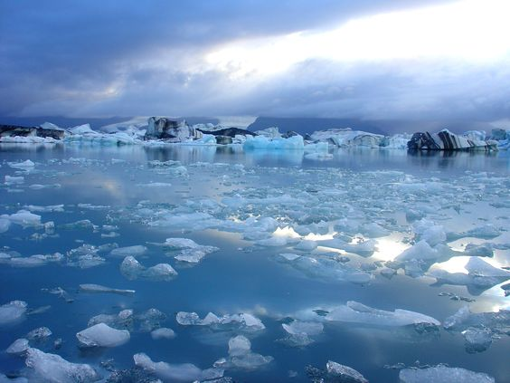
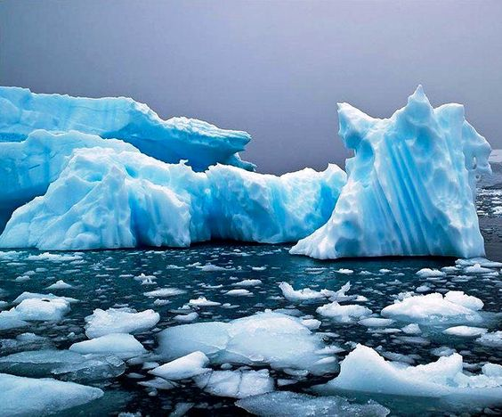
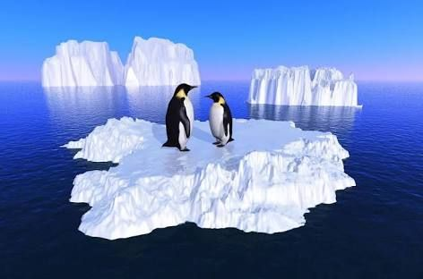

Impacto del Cambio Climático
Los pingüinos enfrentan amenazas debido al cambio climático que afecta sus hábitats naturales. Aquí puedes aprender más sobre esta situación crítica.
El cambio climático está afectando negativamente a la mayoría de las especies de pingüinos en todo el mundo, especialmente a aquellas que habitan en las regiones antárticas y subantárticas. Algunos de los principales impactos son:
- - Reducción de la cobertura y el espesor del hielo marino, dificultando la cría y alimentación de especies antárticas como el pingüino emperador y el pingüino de Adelia. Se proyecta que el pingüino emperador podría perder más del 90% de sus colonias para 2100 si continúan las tendencias actuales de calentamiento.
- - Disminución de las poblaciones de krill, un alimento clave para muchas especies de pingüinos, debido a los cambios en los patrones oceánicos y de hielo. Esto ha provocado una reducción dramática de las poblaciones de pingüinos de Adelia en las últimas décadas.
- - Aumento de la competencia por el alimento y desplazamientos más largos para obtenerlo debido a las olas de calor. Algunas especies como el pingüino de Galápagos se ven perjudicadas en su reproducción y alimentación por fenómenos climáticos.
- - Amenaza de incendios en los hábitats de pingüinos de climas templados, a los que no identifican como peligro y de los que no huyen.
- - Declive poblacional de hasta el 60-75% en especies como el pingüino barbijo y el pingüino de Adelia en la Antártida. En total, 12 de las 18 especies de pingüinos sufren un declive importante debido al cambio climático. El calentamiento global está provocando la disminución de las poblaciones de pingüinos en todo el mundo, especialmente en las regiones polares, debido a la pérdida de hábitat de hielo marino, la escasez de alimento y otros factores relacionados. Reducir sustancialmente las emisiones de gases de efecto invernadero es crucial para disminuir los riesgos para estas carismáticas aves marinas.


